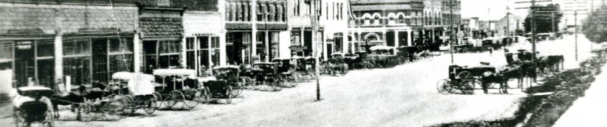

This is Rexburg
Our History
Pioneers first settled near the Teton River banks by instruction of church leader Thomas E. Ricks in 1883. The name Rexburg comes from the german meaning of "Ricks", which is "Rex" or "King".
Demographics
Rexburg Idaho has a population of 28k people. The median age of residents is ~23, which is mainly due to the local university, Brigham Young University Idaho. Roughly 1/3 of Rexburg residents are homeowners, and the housing market is expected to increase as time goes on.
The 2 most predominant ethnic groups in Rexburg are White (Non-Hispanic) at 86%, followed by 7.5% Hispanic.
Current City Events
Due to social distancing practices, there are no current city events. As the country returns to a sense of normality, city sponsored events will be announced.